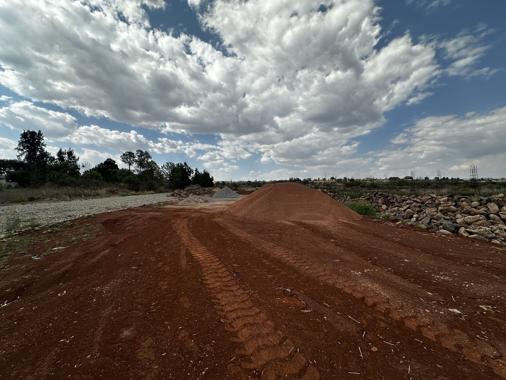

Disponible
Lotes Residenciales · Carretera Arandas–Tepa
Crucero Arandas–Atotonilco, sobre Carretera Arandas–Tepa. Arandas, Jalisco.
Superficie por lote~600 m² (aprox.)
Frente a carretera20 m por sección
Lote 1
~600 m² · Sección 1
Precio a consultar
Lote 2
~600 m² · Sección 1
Precio a consultar
Lote 3
~600 m² · Sección 1
Precio a consultar
Lote 4
~600 m² · Sección 1
Precio a consultar
Superficies aproximadas, sujetas a levantamiento topográfico. Se pueden adquirir lotes individuales.
Contactar por WhatsApp